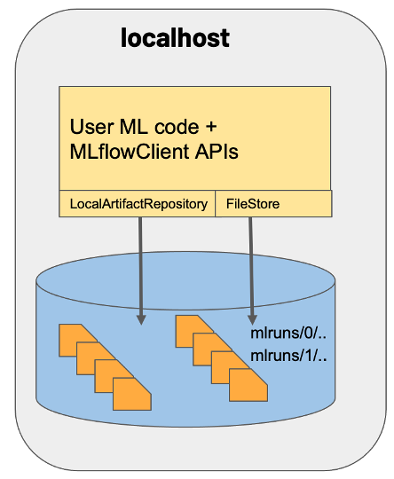
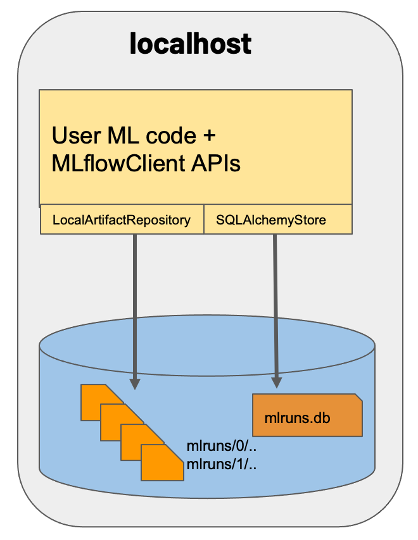
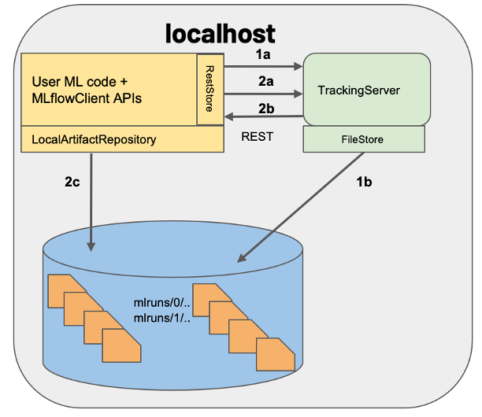

MLflow comes with a rich CLI that provides a simple interface to various functionality in MLflow. You can use the CLI to run projects, start the tracking UI, create and list experiments, download run artifacts, serve MLflow Python Function and scikit-learn models, and serve models on Microsoft Azure Machine Learning and Amazon SageMaker.
!mlflow --help
Usage: mlflow [OPTIONS] COMMAND [ARGS]...
Options:
--version Show the version and exit.
--help Show this message and exit.
Commands:
artifacts Upload, list, and download artifacts from an MLflow...
azureml Serve models on Azure ML.
db Commands for managing an MLflow tracking database.
deployments Deploy MLflow models to custom targets.
experiments Manage experiments.
gc Permanently delete runs in the `deleted` lifecycle stage.
models Deploy MLflow models locally.
pipelines Run MLflow Pipelines and inspect pipeline results.
run Run an MLflow project from the given URI.
runs Manage runs.
sagemaker Serve models on SageMaker.
server Run the MLflow tracking server.
ui Launch the MLflow tracking UI for local viewing of run...
In the next section, we will use mlflow server <args> and mlflow ui commands to demonstrate different MLflow set up scenarios.
Common MLflow configurations
Since the MLflow client can interface with a variety of backend and artifact storage configurations. We will look a three common scenarios:
Scenario#1
MLflow on localhost
This is the most basic set up, where both backend and artifact store are set to local file store. It’s the default mode, so we don’t have to set any parameters while starting the tracking server.
Start MLflow tracking server without any arguments as follows:
mlflow server

Scenario#2
MLflow on localhost with backend store as an SQLAlchemy compatible database type: SQLite
In this case, artifacts are stored under a local directory, and MLflow entities are inserted in a SQLite database file mlruns.db.
Start MLflow tracking server by specifying appropriate values for --backend-store-uri and --default-artifact-root as follows:
mlflow server --backend-store-uri sqlite:////workspace/mlruns.db \--default-artifact-root /workspace/mlruns

Scenario#3
Tracking server launched at localhost
Similar to scenario 1 but a tracking server is launched, listening for REST request calls at the default port 5000.
Start MLflow tracking server by specifying local file path value for --backend-store-uri as follows:
mlflow server --backend-store-uri /workspace/mlruns

Note
To make the CLI commands aware of the tracking server set the MLFLOW_TRACKING_URI environment variable as follows:
exportMLFLOW_TRACKING_URI="http://localhost:5000"
MLflow Tracking UI
After the tracking server is up using the scenario of choice, you can launch MLflow tracking UI by typing http://localhost:5000 in the browser.
MLFlow Tracking UI is in constant communication with the tracking server to present the results of each experiment from the set storage location. The UI contains the following key features:
Experiment-based run listing and comparison (including run comparison across multiple experiments)